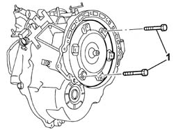
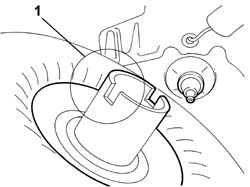
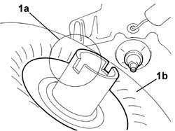

2130B10 Automatic transmission TORQUE CONVERTER - R.R. with gearbox removed
- Path
- Procedures > 21 GEARBOX > 2130 AUTOMATIC TRANSMISSION AND DIFFERENTIAL > 2130B AUTOMATIC TRANSMISSION COMPONENTS > 2130B10 Automatic transmission TORQUE CONVERTER - R.R. with gearbox removed
- Kind
- repair procedure (removal / refitting; the operation number is the code)
- Applies to
- engines: 2.4 20V, 3.0 V6, 3.2 V6; all production periods
- Interactive page
- https://sloeber94.github.io/elrnDB-lThss/en/#/109478
Applies to: engines: 3.0 V6, 3.2 V6; all production periods
 Removing
Removing
 Refitting
Refitting1. Remove the converter using two threaded bolts for assistance.

Applies to: engines: 3.0 V6, 3.2 V6; all production periods
Refitting
Removing1. Place the torque converter in the bellhousing, taking care to ensure that the gearbox side (1a) of the converter is correctly positioned, then remove the bolts used for assistance.

Applies to: engines: 2.4 20V; all production periods
Removing
Refitting1. Remove the converter using two threaded bolts for assistance.
Applies to: engines: 2.4 20V; all production periods
Refitting
Removing1. Place the torque converter in the bellhousing, taking care to ensure that the gearbox side (1a) of the converter (1b) is correctly positioned, then remove the bolts used for assistance.
